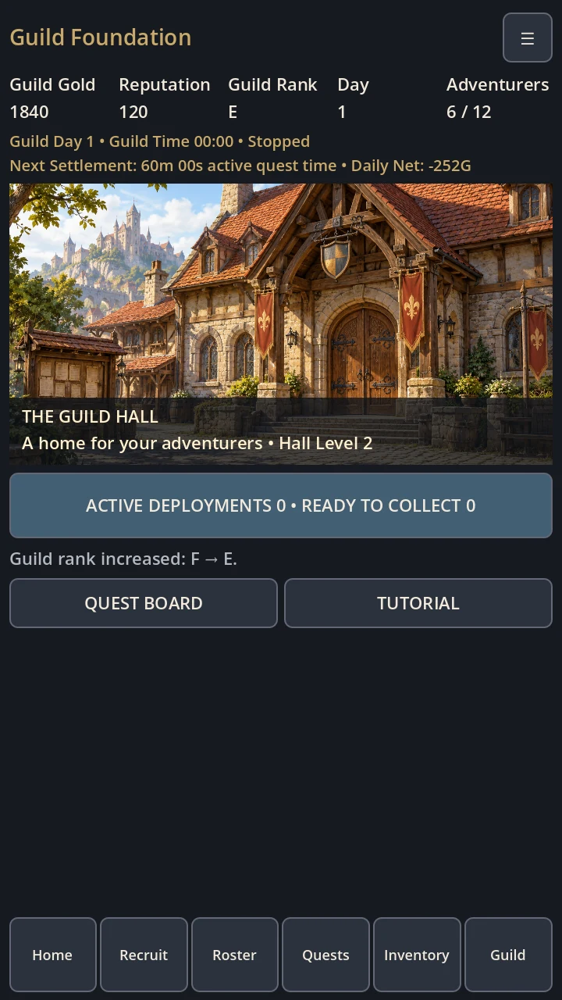

IN DEVELOPMENT — WORKING TITLE
Guild Foundation
A medieval-fantasy guild-management RPG in development for Android. Recruit adventurers, equip them and assign solo or party contracts while managing guild resources and individual possessions.
FROM THE PROTOTYPE
Inside the game.


Guild hall overview


Swipe or use the arrows · tap image to enlarge
The guild hall overview brings the treasury, roster capacity and operational quest clock together.
Desktop-rendered portrait gameplay interfaces using a staged demonstration save. Integrated illustrations are documented AI-generated project artwork.
The current prototype
The current build includes an illustrated Living Quest Board, character loadouts and optional equipment recommendations that require player approval. These demonstrated systems remain in development; this showcase does not imply finished balance.